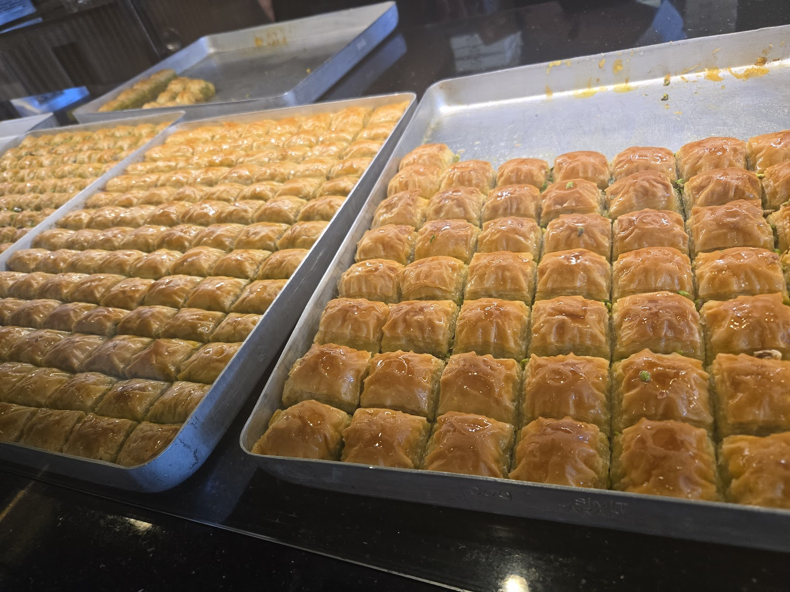
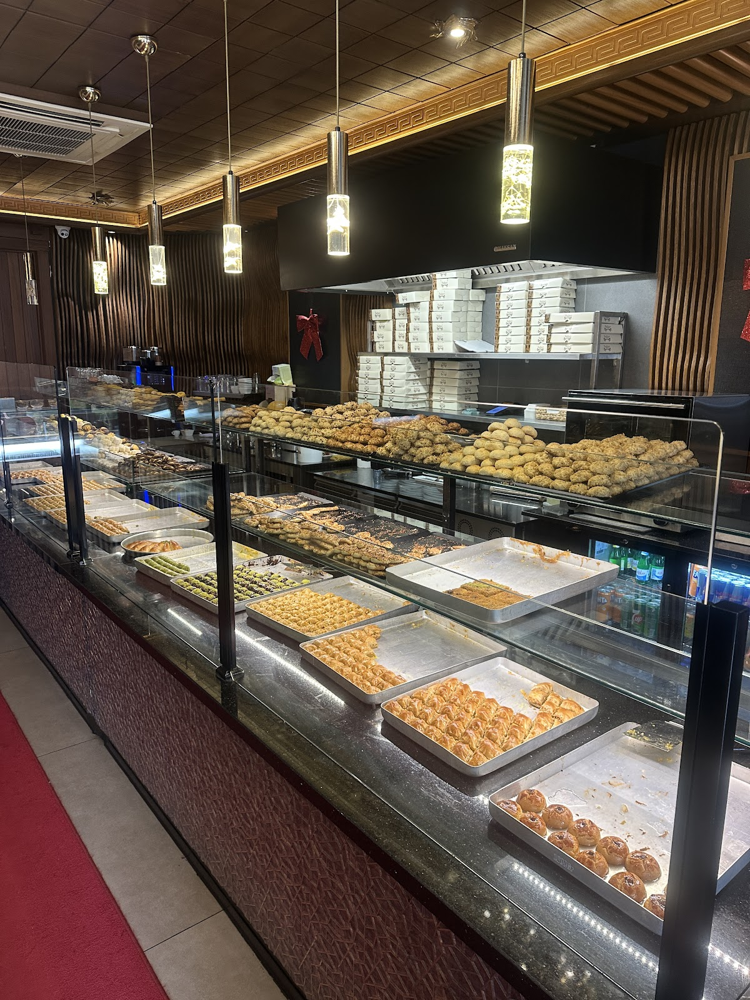
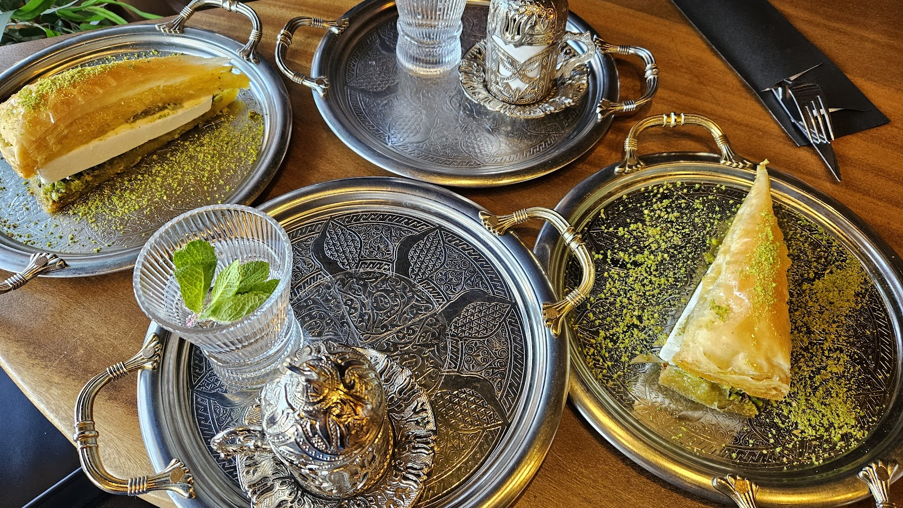
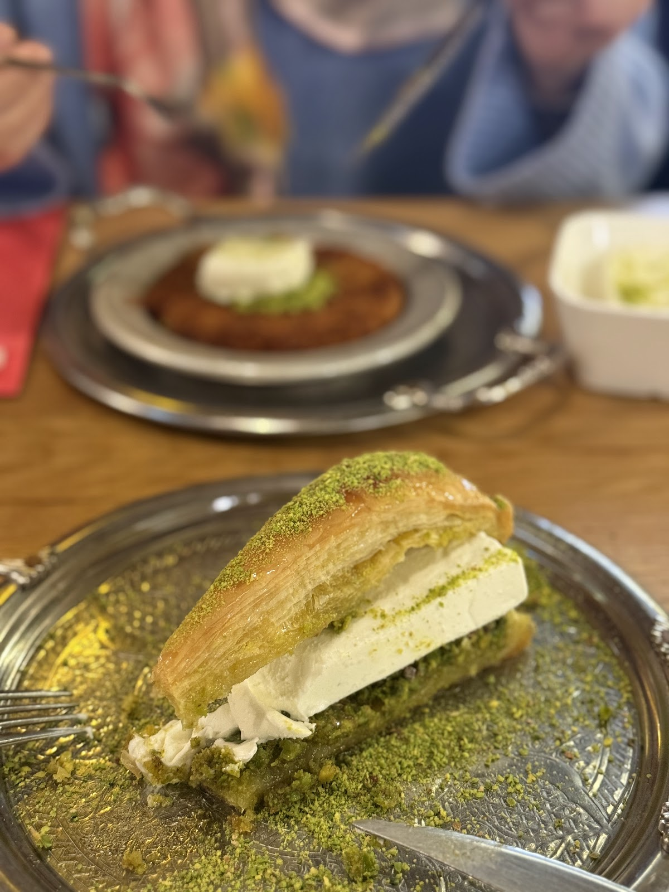
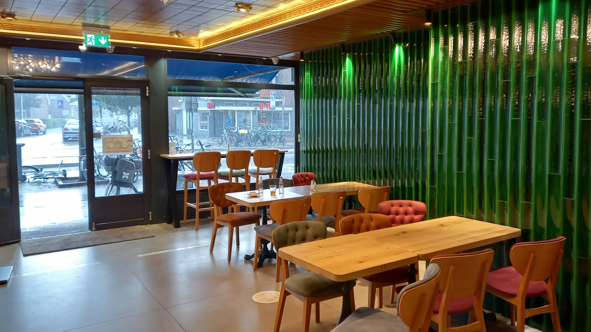
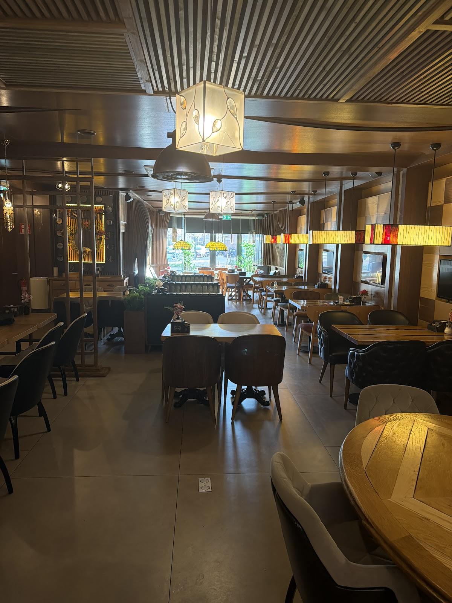
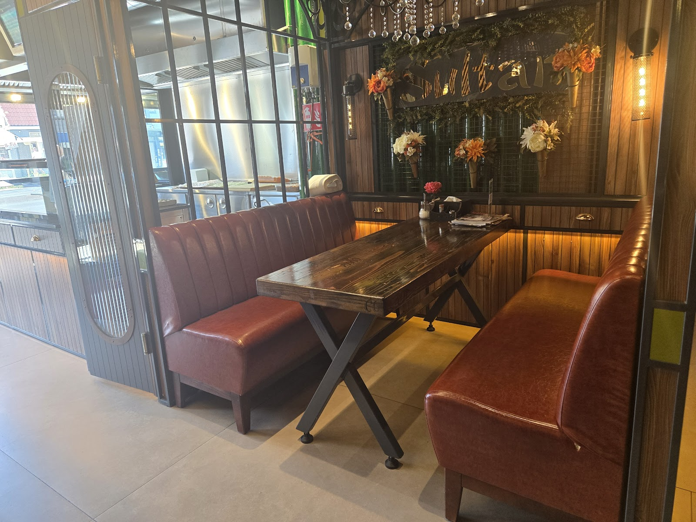

Baklava en café in UtrechtBaklava en café aan de Amsterdamsestraatweg, Utrecht
Baklava zoals het hoort.
Krokant filodeeg, royaal pistache en net genoeg siroop. Neem een doos mee of schuif aan voor baklava met Turkse koffie of thee.
4,4 uit 583 Google-reviews


Een doos vol, voor thuis of voor bezoek.
Aan de toonbank kiest u uit de bakken van vandaag: klassieke baklava, pistacherolletjes, driehoeken en andere Turkse lekkernijen. Per stuk, gemengd in een doos, of een hele tepsi.
Gaat u op visite of heeft u zelf een feest? Bel even van tevoren als u een hele tepsi wilt meenemen, dan staat hij voor u klaar.
Elke dag open vanaf 08:00, zondag vanaf 09:00
Of blijf zitten. Wij schenken bij.
Bij ons komt baklava op een zilveren dienblad, met een kopje Turkse koffie of een glas verse thee. Van ontbijt tot laat op de avond.
-
Baklava met ijs
Lagen filodeeg met een plak ijs ertussen en een berg pistache erover.
-
Turkse koffie en thee
Koffie in een zilveren kopje, thee vers gezet en bijgeschonken.
-
Turks ontbijt
Een open ontbijtbuffet met veel variatie. Vanaf 08:00 uur, op zondag vanaf 09:00.
-
Yaprak döner
Voor wie eerst iets hartigs wil, voordat het zoete begint.


“De baklava was heel erg lekker, vooral met ijs.”Onur Avci op Google
Wat onze gasten zeggen.
4,4 gemiddeld uit 583 reviews op Google
★★★★★
“Voor de lekkerste baklava en andere zoetigheden in Utrecht moet je hier zijn! Vers bereid, rijk gevuld met pistache en perfect in balans qua zoetheid. Ook de andere Turkse lekkernijen zijn absoluut het proberen waard. Een echte aanrader voor iedere zoetekauw! 🍯”
★★★★★
“Het open ontbijtbuffet en de baklava waren zeker een succes!
- ✅ Veel variatie aan eten.
- ✅ Onbeperkt verse thee.
- ✅ Heel mooie sfeer.
- ✅ Beleefde en vriendelijke medewerkers.
- ✅ Redelijke prijs: €17/p.
- ✅ Gratis parkeren aan de overkant van de straat!”
★★★★★
“Laat ik beginnen over onze lieve serveerster Filiz abla. Wij zijn ontzettend liefdevol ontvangen en te zien was dat ze een harde werkster is. Deze vrouw wil je in je team hebben en verdient zeker loonsverhoging. De baklava was heel erg lekker, vooral met ijs.”
Groene tegels, gouden plafond.
Binnen zit u aan houten tafels langs de groene tegelwand, op een leren bank onder ons Sultan-bord of achterin onder de lampen. Een plek om rustig te ontbijten, met vrienden thee te drinken of 's avonds nog iets zoets te halen.
Bekijk de openingstijden


Kom langs, elke dag.
Amsterdamsestraatweg 3893551 CK Utrecht
Parkeren kan aan de overkant van de straat.
Openingstijden
| Maandag | 08:00 tot 22:00 |
| Dinsdag | 08:00 tot 22:00 |
| Woensdag | 08:00 tot 22:00 |
| Donderdag | 08:00 tot 22:00 |
| Vrijdag | 08:00 tot 23:00 |
| Zaterdag | 08:00 tot 23:00 |
| Zondag | 09:00 tot 22:00 |